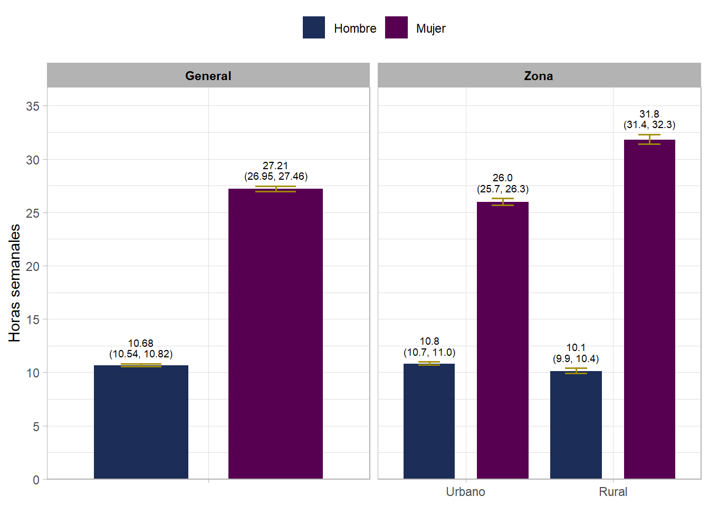
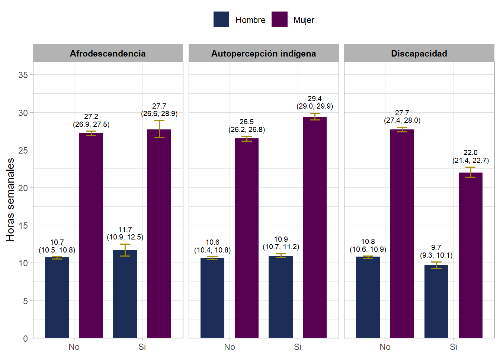

| Cuadro 1. Características sociodemográficas de la población | ||||
| Estimaciones ponderadas, ENIGH México 2024 | ||||
Hombres
|
Mujeres
|
|||
|---|---|---|---|---|
| N | % (IC95%) | N | % (IC95%) | |
| N ponderado | 62358435 | 47.8% | 67967534 | 52.2% |
| Edad, media (IC95%) | NA | 33.4 (33.2, 33.6) | NA | 35.3 (35.1, 35.5) |
| Zona: Urbano | 48686000 | 78.1% (77.6, 78.5) | 53168052 | 78.2% (77.8, 78.7) |
| Zona: Rural | 13672435 | 21.9% (21.5, 22.4) | 14799482 | 21.8% (21.3, 22.2) |
| Autopercepción indígena: No | 45968641 | 76.3% (75.5, 77.1) | 49996234 | 75.8% (75.1, 76.6) |
| Autopercepción indígena: Si | 14289180 | 23.7% (22.9, 24.5) | 15927001 | 24.2% (23.4, 24.9) |
| Afrodescendencia: No | 60612682 | 97.2% (97.0, 97.4) | 66084676 | 97.2% (97.0, 97.5) |
| Afrodescendencia: Si | 1745753 | 2.8% (2.6, 3.0) | 1882858 | 2.8% (2.5, 3.0) |
| Discapacidad: No | 57794800 | 92.9% (92.6, 93.1) | 62807174 | 92.5% (92.3, 92.7) |
| Discapacidad: Si | 4445422 | 7.1% (6.9, 7.4) | 5096226 | 7.5% (7.3, 7.7) |
| Pobreza: Pobreza extrema | 5216483 | 8.4% (7.9, 8.8) | 5888814 | 8.7% (8.2, 9.1) |
| Pobreza: Pobreza por ingresos | 15855138 | 25.4% (24.8, 26.0) | 18216060 | 26.8% (26.2, 27.4) |
| Pobreza: No pobre por ingresos | 41286814 | 66.2% (65.5, 66.9) | 43862660 | 64.5% (63.8, 65.2) |
ENIGH 2024
Para el análisis se utilizó la malla de datos previamente preparada
Variables transversales
De manera inicial se realizó una evaluación “general” de la población, es decir, se calculó la cantidad de hombres y mujeres, el promedio de edad por sexo y las proporciones por sexo de las variables transversales; este análisis inicial constituye el “cuadro 1”, que generalmente pretende describir/mostrar los estimadores de la población hipotética de estudio (encuestas como ENIGH estudian una muestra que pretende ser representativa de una población hipotética: la población nacional, por eso se denominan estimadores ya que los valores “reales” sólo podrían obtenerse si se encuestara a la totalidad de la población mexicana)
Las variables transversales evaluadas son:
- Zona urbana/rural
- Autopercepción indígena (etnia)
- Afrodescendencia
- Discapacidad
- Pobreza (por líneas LPE LPEI segun zona urbana/rural)
En el siguiente cuadro se presentan algunas de las características de la población mexicana en el año de estudio (2024) mediante el cálculo de estimadores tomando en consideración el diseño complejo de encuesta (estratificación, conglomeración del diseño, ponderadores poblacionales). En este primer cuadro se inlcuye a toda la población encuestada durante la ENIGH 2024, no hay restricción de edad o por alguna otra característica.
Variables feminización
Para efectos del análisis denominaremos “variables de feminización” a las variables objetivo del estudio, en las que se incluyen:
- Tiempo no remunerado
- Dependencia económica
- Tipo de jefatura (a nivel hogar)
- Acceso a mercado laboral
- Acceso financiero (a nivel hogar)
- Acceso propiedad (a nivel vivienda)
Para cada variable de feminización, se analizó la proporción de hombres vs mujeres y también se realizaron estratificaciones (cruce) por las variables transversales, siempre manteniendo las separaciones entre sexos.
En el caso del Tiempo no Remunerado (variable contínua), no se calcularon proporciones, sino medias (promedio de horas semanales), de igual forma manteniendo las separaciones por sexo.
Es importante mencionar que el análisis no incluye la determinación de estratificación máxima (es decir, el número de veces que se puede estratificar una determinada variable segun otra/s variables), ya que ese tipo de análisis se realiza a priori (diseño del estudio) y no se incluyó en la cotización del proyecto, sin embargo en los bloques específicos de cada variable de feminización se indican que estratificaciones estan sujetas a baja calidad por múltiple segmentación; dichos datos pueden ser referenciados para fines académicos, sin embargo el estimador no es confiable para asegurar que es extrapolable a la población nacional.
Las recomendaciones para este tipo de situaciones son:
Realizar la evaluación a priori de los niveles de segmentación durante el diseño de estudio
Uso de variables con el menor número de categorías informativas posibles o colapso de categorías similares
Si el objetivo son poblaciones minoritarias o altamente específicas (ej, afrodescendencia, jef@s uniparentales con hijos residentes afrodescendientes en pobreza extrema) se deben evaluar los puntos anteriores y utilizar datos (ó construir mallas de datos) de funtes que esten enriquecidas con las poblaciones dianas; también se pueden utilizar diseños de estudio de encuestas múltiples (ej. evaluación conjunta de ENIGH 2018, 2020, 2022, 2024) para aumentar el número de observaciones
El análisis se realizo con software R versión 4.5.1, con la paquetería survey para el análisis de encuestas de diseño complejo. Todas las estimaciones incorporaron la estratificación y conglomeración del diseño, así como los ponderadores específicos dependiendo del análisis (diseño de encuesta compleja)
A partir de esta sección (variables de feminización) ya no se ocupa la malla completa de datos, se utilizan los datos solamente de personas de 12 años y más en todos los casos.
Tiempo no remunerado (TNR)
| Promedio de tiempo no remunerado por sexo | |
| Estimaciones ponderadas, ENIGH 2024 México | |
| Sexo | Media (IC95%) |
|---|---|
| Hombre | 10.68 (10.54, 10.82) |
| Mujer | 27.21 (26.95, 27.46) |
TNR por transversales
Las desagregaciones/estratificaciones en este bloque permiten una generalización confiable al universo de estudio en todos sus niveles de desagregación
| Tiempo no remunerado por sexo | ||
| Media (h) semanal, ENIGH México 2024 | ||
| Hombres Media (IC95%) | Mujeres Media (IC95%) | |
|---|---|---|
| Zona | ||
| Urbano | 10.8 (10.7, 11.0) | 26.0 (25.7, 26.3) |
| Rural | 10.1 (9.9, 10.4) | 31.8 (31.4, 32.3) |
| Autopercepción indígena | ||
| No | 10.6 (10.4, 10.8) | 26.5 (26.2, 26.8) |
| Si | 10.9 (10.7, 11.2) | 29.4 (29.0, 29.9) |
| Afrodescendencia | ||
| No | 10.7 (10.5, 10.8) | 27.2 (26.9, 27.5) |
| Si | 11.7 (10.9, 12.5) | 27.7 (26.6, 28.9) |
| Discapacidad | ||
| No | 10.8 (10.6, 10.9) | 27.7 (27.4, 28.0) |
| Si | 9.7 (9.3, 10.1) | 22.0 (21.4, 22.7) |
| Pobreza | ||
| Pobreza extrema | 10.6 (10.2, 11.1) | 34.7 (33.8, 35.5) |
| Pobreza por ingresos | 10.2 (9.9, 10.5) | 31.0 (30.4, 31.6) |
| No pobre por ingresos | 10.8 (10.7, 11.0) | 25.0 (24.7, 25.3) |
Ejemplo de lectura: los hombres en zonas urbanas tuvieron una media semanal de 10.8h de TNR mientras que aquellos en zona rural tuvieron una media semanal de 10.1h…
g1: TNR promedio semanal general (solo segmentado por sexo) y por zona urabana/rual por sexo

g2: TNR promedio semanal por afrodescendencia, autopercepción indígena y discapacidad, en todos los casos segmentado por sexo

Dependencia económica
En este bloque vemos la dependencia económica usando la variable de 3 categorías:
- si
- no
- no calculable
Recordar que “No calculable” se le asignó a aquellas personas que tuvieron NA en reporte de ingresos de manera individual (ej, niños/adolescentes de 12 años y más que no reportaron ingresos, adultos sin reporte de ingresos)
| Dependencia económica | ||||
| Estimaciones ponderadas, ENIGH 2024 México | ||||
Hombres
|
Mujeres
|
|||
|---|---|---|---|---|
| N | % (IC95%) | N | % (IC95%) | |
| Dependencia económica : No | 34456876 | 67.6% (67.2, 68.0) | 23387836 | 40.9% (40.5, 41.4) |
| Dependencia económica : Si | 8901013 | 17.5% (17.1, 17.8) | 16108442 | 28.2% (27.8, 28.6) |
| Dependencia económica : No calculable | 7614253 | 14.9% (14.6, 15.3) | 17640370 | 30.9% (30.4, 31.3) |
Recordar que la variable de dependencia económica es categórica por lo que aquí no se calculan medias, sino proporciones, por lo que la interpretación sería como sigue:
Ejemplo de lectura: En el caso de los hombres (de 12 años y más), un 67.6% no es dependiente económico, mientras que un 17.5% si lo es, además un 14.9% es indeterminado/no calculable ya que no reportó ingresos o valores para determinar su posible (o no) dependencia económica; en el caso de las mujeres…
Dependencia económica por transversales
Las estratificaciones en este bloque permiten una generalización confiable al universo de estudio en todos sus niveles de desagregación
| Dependencia económica por variables transversales | |||
| Categoría | Hombre N % (IC95%) | Mujer N % (IC95%) | |
|---|---|---|---|
| Zona | |||
| Urbano | Dependencia económica : No | 27857150 (69.0% (68.5, 69.5)) | 19832530 (43.8% (43.3, 44.4)) |
| Urbano | Dependencia económica : Si | 6347903 (15.7% (15.3, 16.2)) | 11830578 (26.1% (25.6, 26.6)) |
| Urbano | Dependencia económica : No calculable | 6145958 (15.2% (14.8, 15.6)) | 13587236 (30.0% (29.5, 30.6)) |
| Rural | Dependencia económica : No | 6599726 (62.1% (61.2, 63.1)) | 3555306 (29.9% (29.1, 30.7)) |
| Rural | Dependencia económica : Si | 2553110 (24.0% (23.2, 24.9)) | 4277864 (36.0% (35.2, 36.8)) |
| Rural | Dependencia económica : No calculable | 1468295 (13.8% (13.3, 14.4)) | 4053134 (34.1% (33.3, 34.9)) |
| Autopercepción indígena | |||
| No | Dependencia económica : No | 26981256 (69.2% (68.7, 69.7)) | 18816734 (43.3% (42.8, 43.8)) |
| No | Dependencia económica : Si | 6128628 (15.7% (15.3, 16.1)) | 11223439 (25.8% (25.3, 26.3)) |
| No | Dependencia económica : No calculable | 5904796 (15.1% (14.7, 15.5)) | 13403029 (30.9% (30.3, 31.4)) |
| Si | Dependencia económica : No | 7475620 (62.5% (61.6, 63.5)) | 4571102 (33.4% (32.5, 34.3)) |
| Si | Dependencia económica : Si | 2772385 (23.2% (22.4, 24.0)) | 4885003 (35.7% (34.8, 36.5)) |
| Si | Dependencia económica : No calculable | 1709457 (14.3% (13.6, 14.9)) | 4237341 (30.9% (30.0, 31.9)) |
| Afrodescendencia | |||
| No | Dependencia económica : No | 33470104 (67.6% (67.1, 68.0)) | 22781259 (41.0% (40.6, 41.5)) |
| No | Dependencia económica : Si | 8642218 (17.5% (17.1, 17.8)) | 15626832 (28.1% (27.7, 28.6)) |
| No | Dependencia económica : No calculable | 7400059 (14.9% (14.6, 15.3)) | 17140752 (30.9% (30.4, 31.3)) |
| Si | Dependencia económica : No | 986772 (67.6% (64.9, 70.2)) | 606577 (38.2% (35.8, 40.6)) |
| Si | Dependencia económica : Si | 258795 (17.7% (15.6, 19.9)) | 481610 (30.3% (27.9, 32.8)) |
| Si | Dependencia económica : No calculable | 214194 (14.7% (12.9, 16.4)) | 499618 (31.5% (29.2, 33.7)) |
| Discapacidad | |||
| No | Dependencia económica : No | 32190683 (68.9% (68.4, 69.3)) | 21614921 (41.4% (40.9, 41.9)) |
| No | Dependencia económica : Si | 7453450 (15.9% (15.6, 16.3)) | 13869826 (26.6% (26.1, 27.0)) |
| No | Dependencia económica : No calculable | 7099794 (15.2% (14.8, 15.6)) | 16731727 (32.0% (31.6, 32.5)) |
| Si | Dependencia económica : No | 2253331 (54.8% (53.3, 56.3)) | 1765316 (36.4% (35.0, 37.7)) |
| Si | Dependencia económica : Si | 1384450 (33.7% (32.3, 35.0)) | 2204728 (45.4% (44.0, 46.8)) |
| Si | Dependencia económica : No calculable | 472221 (11.5% (10.5, 12.5)) | 885996 (18.2% (17.1, 19.4)) |
Ejemplo de lectura:
Para los hombres de zona urbana, se estima que un 15.7% (IC95% 15.3-16.2) se encuentran en condición de dependencia económica mientras que un 69% (IC95% 68.5-69.5) no lo están; existe además un 15.2% (IC95% 14.8-15.6) a los que no fue posible catalogar como dependientes/no dependientes por falta de información para categorizarlos. En el caso de las mujeres…
g3: dependencia económica general (solo por sexo) y dependencia por zona urbana y rural, por sexo en ambos casos; eje X dependencia económica

g4: dependencia económica únicamente en grupos “si” (si es afrodescendiente, si se percibe indígena, si tiene discapacidad) por sexo en todos los casos; eje X dependencia económica

Tipo jefatura
El análisis de esta variable se realizó considerando la estructura de convivencia en el hogar del jef@ de hogar con hijos residentes y la presencia/ausencia del padre/madre contraparte de dichos hijos; por lo que aquellos jefes de hogar uniparentales (viven solos), o jefes de hogares extendidos donde puede haber otros dependientes (ej. padres adultos mayores, familiares menores, familia extendida, etc) quedan fuera de este análisis.
| Tipo de jefatura en los hogares | |||||
| Estimaciones ponderadas, ENIGH 2024 México | |||||
| Parentalidad |
Hogares con jefatura de Hombres
|
Hogares con jefatura de Mujeres
|
|||
|---|---|---|---|---|---|
| N | % (IC95%) | N | % (IC95%) | ||
| Tipo jefatura | Biparental | 16046603 | 92.5% (92.0, 92.9) | 1639717 | 18.7% (17.9, 19.5) |
| Tipo jefatura | Uniparental | 1308522 | 7.5% (7.1, 8.0) | 7126941 | 81.3% (80.5, 82.1) |
Ejemplo de lectura: se estimó que en aquellos hogares donde hubo hijos residentes y la jefatura de hogar fue de sexo masculino, alredor de 16.05 millones de hogares (92.5%) presentaron una estructura de convivencia biparental mientras que alrededor de 1.3 millones de hogares (7.5%) presentaron una estructura de convivencia uniparental…
Transversales en jefatura
Las desagregaciones (algunas de las combinaciones/segmentaciones) para afrodescendencia tienen una capacidad de generalización limitada y deben ser consideradas como tendencias, no como valores concluyentes
| variable | Transversal | Tipo de jefatura |
Hogares con jefatura de Hombres
|
Hogares con jefatura de Mujeres
|
||
|---|---|---|---|---|---|---|
| N | % (IC95%) | N | % (IC95%) | |||
| Zona | ||||||
| Tipo jefatura | Urbano | Biparental | 12268131 | 91.9% (91.4, 92.4) | 1379696 | 19.0% (18.1, 19.9) |
| Tipo jefatura | Urbano | Uniparental | 1081762 | 8.1% (7.6, 8.6) | 5869418 | 81.0% (80.1, 81.9) |
| Tipo jefatura | Rural | Biparental | 3778472 | 94.3% (93.6, 95.1) | 260021 | 17.1% (15.9, 18.4) |
| Tipo jefatura | Rural | Uniparental | 226760 | 5.7% (4.9, 6.4) | 1257523 | 82.9% (81.6, 84.1) |
| Autopercepción indígena | ||||||
| Tipo jefatura | No | Biparental | 12028891 | 92.4% (91.9, 92.9) | 1262999 | 18.6% (17.7, 19.5) |
| Tipo jefatura | No | Uniparental | 995735 | 7.6% (7.1, 8.1) | 5534381 | 81.4% (80.5, 82.3) |
| Tipo jefatura | Si | Biparental | 4017712 | 92.8% (92.1, 93.5) | 376718 | 19.1% (17.6, 20.7) |
| Tipo jefatura | Si | Uniparental | 312787 | 7.2% (6.5, 7.9) | 1592560 | 80.9% (79.3, 82.4) |
| Afrodescendencia | ||||||
| Tipo jefatura | No | Biparental | 15608049 | 92.4% (92.0, 92.8) | 1596019 | 18.8% (18.0, 19.5) |
| Tipo jefatura | No | Uniparental | 1280946 | 7.6% (7.2, 8.0) | 6915715 | 81.2% (80.5, 82.0) |
| Tipo jefatura | Si | Biparental | 438554 | 94.1% (92.2, 95.9) | 43698 | 17.1% (12.9, 21.3) |
| Tipo jefatura | Si | Uniparental | 27576 | 5.9% (4.1, 7.8) | 211226 | 82.9% (78.7, 87.1) |
| Discapacidad | ||||||
| Tipo jefatura | No | Biparental | 14722417 | 93.2% (92.8, 93.6) | 1488979 | 19.8% (18.9, 20.7) |
| Tipo jefatura | No | Uniparental | 1074328 | 6.8% (6.4, 7.2) | 6036549 | 80.2% (79.3, 81.1) |
| Tipo jefatura | Si | Biparental | 1300154 | 85.1% (83.3, 86.9) | 150738 | 12.2% (10.2, 14.3) |
| Tipo jefatura | Si | Uniparental | 227778 | 14.9% (13.1, 16.7) | 1084291 | 87.8% (85.7, 89.8) |
| Pobreza | ||||||
| Tipo jefatura | Pobreza extrema | Biparental | 1445218 | 96.9% (96.3, 97.6) | 101868 | 18.8% (15.8, 21.9) |
| Tipo jefatura | Pobreza extrema | Uniparental | 45481 | 3.1% (2.4, 3.7) | 439094 | 81.2% (78.1, 84.2) |
| Tipo jefatura | Pobreza por ingresos | Biparental | 4479802 | 95.2% (94.7, 95.8) | 406345 | 19.2% (17.7, 20.8) |
| Tipo jefatura | Pobreza por ingresos | Uniparental | 223840 | 4.8% (4.2, 5.3) | 1707563 | 80.8% (79.2, 82.3) |
| Tipo jefatura | No pobre por ingresos | Biparental | 10121583 | 90.7% (90.1, 91.3) | 1131504 | 18.5% (17.6, 19.4) |
| Tipo jefatura | No pobre por ingresos | Uniparental | 1039201 | 9.3% (8.7, 9.9) | 4980284 | 81.5% (80.6, 82.4) |
Ejemplo de lectura: Para los hogares (donde existe la estructura de hijos residentes y jef@ de hogar) en entornos urbanos, en aquellos casos que la jefatura fue del sexo masculino, un 91.9% (IC95% 91.4-92.4) mostró estructura biparental, mientras que un 8.1% fue uniparental; en el caso de los hogares urbanos donde la jefatura fue del sexo femenino, se estimó que en 19% de los casos la estructura fue biparental mientras que en un 81% fue uniparental….
g5: hogares con hijos residentes y tipo de parentalidad (uni/biparental) por sexo de jefe del hogar, de forma general (solo por sexo del jefe) y por zona urbano/rural conservando segementación por sexo; eje X tipo de parentalidad/ convivencia delos padres

g6: hogares con hijos residentes y tipo de parentalidad (uni/biparental) en los grupos de afrodescendencia, etnia, discapciadad, conservando segementación por sexo del jefe; eje X tipo de parentalidad/ convivencia de los padres

g7: hogares con hijos residentes y tipo de parentalidad (uni/biparental) en los grupos de pobreza, conservando segmentación por sexo del jefe; eje X tipo de parentalidad/ convivencia de los padres

Acceso financiero por hogar
Recordar que el acceso financiero se construyo para el hogar (información disponible a nivel de hogar, no de persona) por lo que para determinar el acceso por sexo se considera sólo a los jef@s de hogar (sexo del jefe); asumiendo que al ser el lider del hogar tiene/no tiene, acceso al servicio financiero.
Este análisis incluye a todos los jef@s de hogar (no solo los que tienen hijos residentes, todos)
| Acceso financiero en los hogares por sexo del jef@ | |||||
| Estimaciones ponderadas, ENIGH 2024 México | |||||
| Categoría |
Hogares con jefatura de Hombres
|
Hogares con jefatura de Mujeres
|
|||
|---|---|---|---|---|---|
| N | % (IC95%) | N | % (IC95%) | ||
| Acceso financiero | No | 17938852 | 69.5% (68.8, 70.2) | 9012819 | 69.2% (68.3, 70.2) |
| Acceso financiero | Si | 7859016 | 30.5% (29.8, 31.2) | 4002109 | 30.8% (29.8, 31.7) |
Ejemplo de lectura: Se estimo que en los hogares con jefatura de sexo masculino, un 69.5% de dicho hogares no cuenta con acceso a servicios financieros mientras que un 30.5% si tiene acceso, en el caso de hogares con jefatura femenina…
Transversales en acceso financiero
Las desagregaciones para algunas de las combinaciones al segmentar por pobreza tienen una capacidad de generalización limitada y deben ser consideradas como tendencias, no como valores concluyentes.
| Transversal | Acceso financiero |
Hogares con jefatura de Hombres
|
Hogares con jefatura de Mujeres
|
||
|---|---|---|---|---|---|
| N | % (IC95%) | N | % (IC95%) | ||
| Zona | |||||
| Urbano | No | 12733003 | 63.5% (62.6, 64.4) | 7030247 | 65.0% (63.9, 66.0) |
| Urbano | Si | 7312560 | 36.5% (35.6, 37.4) | 3792870 | 35.0% (34.0, 36.1) |
| Rural | No | 5205849 | 90.5% (89.8, 91.2) | 1982572 | 90.5% (89.5, 91.4) |
| Rural | Si | 546456 | 9.5% (8.8, 10.2) | 209239 | 9.5% (8.6, 10.5) |
| Autopercepción indígena | |||||
| No | No | 12630663 | 65.0% (64.1, 65.9) | 6577502 | 65.6% (64.5, 66.7) |
| No | Si | 6799401 | 35.0% (34.1, 35.9) | 3451724 | 34.4% (33.3, 35.5) |
| Si | No | 5308189 | 83.4% (82.4, 84.3) | 2435317 | 81.6% (80.2, 82.9) |
| Si | Si | 1059615 | 16.6% (15.7, 17.6) | 550385 | 18.4% (17.1, 19.8) |
| Afrodescendencia | |||||
| No | No | 17411331 | 69.5% (68.8, 70.2) | 8739770 | 69.1% (68.2, 70.0) |
| No | Si | 7646800 | 30.5% (29.8, 31.2) | 3911421 | 30.9% (30.0, 31.8) |
| Si | No | 527521 | 71.3% (67.8, 74.8) | 273049 | 75.1% (70.8, 79.3) |
| Si | Si | 212216 | 28.7% (25.2, 32.2) | 90688 | 24.9% (20.7, 29.2) |
| Discapacidad | |||||
| No | No | 15803920 | 68.4% (67.7, 69.2) | 7510647 | 68.2% (67.2, 69.1) |
| No | Si | 7295093 | 31.6% (30.8, 32.3) | 3504127 | 31.8% (30.9, 32.8) |
| Si | No | 2091701 | 79.0% (77.3, 80.6) | 1498889 | 75.2% (73.1, 77.3) |
| Si | Si | 557074 | 21.0% (19.4, 22.7) | 493306 | 24.8% (22.7, 26.9) |
| Pobreza | |||||
| Pobreza extrema | No | 1611557 | 95.3% (94.4, 96.3) | 579099 | 94.6% (92.6, 96.7) |
| Pobreza extrema | Si | 78955 | 4.7% (3.7, 5.6) | 33002 | 5.4% (3.3, 7.4) |
| Pobreza por ingresos | No | 4862224 | 88.1% (87.2, 89.0) | 2212360 | 87.5% (85.7, 89.4) |
| Pobreza por ingresos | Si | 654080 | 11.9% (11.0, 12.8) | 315099 | 12.5% (10.6, 14.3) |
| No pobre por ingresos | No | 11465071 | 61.7% (60.8, 62.5) | 6221360 | 63.0% (62.0, 64.0) |
| No pobre por ingresos | Si | 7125981 | 38.3% (37.5, 39.2) | 3654008 | 37.0% (36.0, 38.0) |
g8: acceso financiero a nivel de hogar desagregado por sexo del jef@ del hogar; acceso general (solo por sexo del jef@) y por zona urbana/rural; eje X acceso financiero

g9: acceso financiero a nivel de hogar desagregado por sexo del jef@ del hogar; acceso en los grupos “Si” de afrodescendencia, etnia y discapacidad, en todos los casos se conserva la segmentación por sexo; eje X acceso financiero

g10: acceso financiero a nivel de hogar desagregado por sexo del jef@ del hogar; acceso en los grupos de pobreza, en todos los casos se conserva la segmentación por sexo; eje X acceso financiero

Acceso propiedad vivienda
Para este análisis, se restringen los datos para aquellos que tras la limpieza de datos, se logró una identificación única de titularidad de la propiedad; esto implica que los datos de este análisis pertenecen únicamente a aquellas viviendas que tienen estatus de “propia” y que el dueño vive en la misma propiedad; por lo que los casos donde la vivienda sea “propia” pero el dueño no vive en la propiedad (ejemplo rentas, prestamos, etc) no estan considerados en este análisis, ni tampoco los casos en que las propiedades no tengan titularidad o tengan otro estatus.
Es importante mencionar que la titularidad solo permite identificar al dueñ@ pero ni la estructura de la encuesta ni la construccion de las variables permite determinar de forma precisa aquellas personas que NO son dueñas/no tienen acceso de forma confiable, es decir, personas que viven en un hogar propio pero no son los dueños (ej. niños, adolescentes, familiares, etc) no implican un NO acceso a la propiedad, ya que pueden o NO, tener acceso a otro tipo de propiedades que no son precisamente la vivienda encuestada, por lo que el análisis solo se restringió a la categoría “Si” (viviendas propias, que el dueño vive en la vivienda, que se consideran con “si” acceso a la propiedad; las demás personas no se pueden determinar de forma precisa como NO acceso)
| Viviendas con propiedad por sexo del dueñ@ | |||
| Estimaciones ponderadas, ENIGH 2024 México | |||
| Sexo | N | % (IC95%) | |
|---|---|---|---|
| Viviendas con propiedad | Hombre | 10497787 | 56.7% (56.0–57.4) |
| Viviendas con propiedad | Mujer | 8028497 | 43.3% (42.6–44.0) |
Ejemplo de lectura: se estimó que alrededor de 10.5 millones de viviendas tuvieron el estatus de propia, el dueño vivía en el lugar y además fue del sexo masculino, lo que representa un 56.7% de los casos, mientras que alrededor de 8 millones de viviendas tuvieron titularidad y ocupación por dueña de sexo femenino….
Transversales en acceso propiedad
Las estratificaciones en este bloque permiten una generalización confiable al universo de estudio en todos sus niveles de desagregación
| Viviendas con propiedad por características sociodemográficas | |||||
| Estimaciones ponderadas, ENIGH 2024 | |||||
| Transversal | Categoría |
Viviendas propias con dueño Hombre
|
Viviendas propias con dueña Mujer
|
||
|---|---|---|---|---|---|
| N | % (IC95%) | N | % (IC95%) | ||
| Zona | Urbano | 8313622 | 79.2% (78.4–80.0) | 6918877 | 86.2% (85.5–86.8) |
| Zona | Rural | 2184165 | 20.8% (20.0–21.6) | 1109620 | 13.8% (13.2–14.5) |
| Autopercepción indígena | No | 8042340 | 76.6% (75.6–77.6) | 6378045 | 79.4% (78.5–80.4) |
| Autopercepción indígena | Si | 2455447 | 23.4% (22.4–24.4) | 1650452 | 20.6% (19.6–21.5) |
| Afrodescendencia | No | 10229002 | 97.4% (97.1–97.8) | 7822172 | 97.4% (97.0–97.8) |
| Afrodescendencia | Si | 268785 | 2.6% (2.2–2.9) | 206325 | 2.6% (2.2–3.0) |
| Discapacidad | No | 9228729 | 88.1% (87.5–88.7) | 6800432 | 84.8% (84.0–85.6) |
| Discapacidad | Si | 1246203 | 11.9% (11.3–12.5) | 1216835 | 15.2% (14.4–16.0) |
| Condición de pobreza | Pobreza extrema | 498285 | 4.7% (4.3–5.2) | 249105 | 3.1% (2.7–3.5) |
| Condición de pobreza | Pobreza por ingresos | 1800717 | 17.2% (16.4–17.9) | 1221296 | 15.2% (14.4–16.0) |
| Condición de pobreza | No pobre por ingresos | 8198785 | 78.1% (77.3–78.9) | 6558096 | 81.7% (80.8–82.5) |
g11: proporcion de viviendas con estatus propio y que el dueñ@ vive en el lugar, de forma general (desagregado solo por sexo del dueñ@), y por zona donde se conserva la segmentación por sexo del dueñ@

g12: proporcion de viviendas con estatus propio y que el dueñ@ vive en el lugar, en los grupos “Si” de afrodescendencia, etnia y discapacidad, en todos los casos se conserva la segmentación por sexo del dueñ@

g13: proporcion de viviendas con estatus propio y que el dueñ@ vive en el lugar, por grupo de pobreza, en todos los casos se conserva la segmentación por sexo del dueñ@

Mercado laboral
| Acceso a mercado laboral | ||||
Hombres
|
Mujeres
|
|||
|---|---|---|---|---|
| N | % (IC95%) | N | % (IC95%) | |
| Mercado laboral : Formal profesional | 5240688 | 14.3% (13.9, 14.7) | 4889507 | 17.9% (17.3, 18.4) |
| Mercado laboral : Formal no profesional | 9224920 | 25.1% (24.6, 25.7) | 5274874 | 19.3% (18.8, 19.8) |
| Mercado laboral : Informal profesional | 3150168 | 8.6% (8.3, 8.9) | 2657896 | 9.7% (9.3, 10.1) |
| Mercado laboral : Informal no profesional | 19101601 | 52.0% (51.4, 52.7) | 14546742 | 53.2% (52.5, 53.8) |
Ejemplo de lectura: para los hombres que declararon actividades laborales, se estimó que un 52% de los casos, sus actividades fueron en el sector informal no profesional, un 25.1% en el sector formal no profesional, un 14.3% en el sector formal profesional y un 8.6% en el sector informal profesional mientras que en el caso de las mujeres…
Las desagregaciones para algunas de las combinaciones al segmentar por pobreza tienen una capacidad de generalización limitada y deben ser consideradas como tendencias, no como valores concluyentes.
| Mercado laboral por variables transversales | |||
| Categoría | Hombres n (%)(IC95%) | Mujeres n (%)(IC95%) | |
|---|---|---|---|
| Zona | |||
| Urbano | Formalidad laboral : Formal profesional | 4961851 (17.5% (17.0, 18.0)) | 4633789 (21.1% (20.5, 21.7)) |
| Urbano | Formalidad laboral : Formal no profesional | 8186553 (28.9% (28.2, 29.5)) | 4816629 (21.9% (21.3, 22.5)) |
| Urbano | Formalidad laboral : Informal profesional | 2843402 (10.0% (9.6, 10.4)) | 2394770 (10.9% (10.4, 11.4)) |
| Urbano | Formalidad laboral : Informal no profesional | 12377211 (43.6% (42.9, 44.4)) | 10117859 (46.1% (45.3, 46.9)) |
| Rural | Formalidad laboral : Formal profesional | 278837 (3.3% (2.9, 3.8)) | 255718 (4.7% (4.2, 5.2)) |
| Rural | Formalidad laboral : Formal no profesional | 1038367 (12.4% (11.8, 13.1)) | 458245 (8.5% (7.7, 9.2)) |
| Rural | Formalidad laboral : Informal profesional | 306766 (3.7% (3.4, 4.0)) | 263126 (4.9% (4.4, 5.3)) |
| Rural | Formalidad laboral : Informal no profesional | 6724390 (80.5% (79.6, 81.5)) | 4428883 (81.9% (80.9, 82.9)) |
| Autopercepción indígena | |||
| No | Formalidad laboral : Formal profesional | 4555342 (16.5% (16.0, 17.1)) | 4239823 (20.6% (20.0, 21.3)) |
| No | Formalidad laboral : Formal no profesional | 7601353 (27.6% (27.0, 28.2)) | 4399478 (21.4% (20.8, 22.0)) |
| No | Formalidad laboral : Informal profesional | 2624142 (9.5% (9.1, 9.9)) | 2193904 (10.7% (10.2, 11.1)) |
| No | Formalidad laboral : Informal no profesional | 12756751 (46.3% (45.6, 47.1)) | 9706943 (47.3% (46.4, 48.1)) |
| Si | Formalidad laboral : Formal profesional | 685346 (7.5% (6.9, 8.1)) | 649684 (9.5% (8.8, 10.3)) |
| Si | Formalidad laboral : Formal no profesional | 1623567 (17.7% (16.8, 18.6)) | 875396 (12.8% (11.9, 13.7)) |
| Si | Formalidad laboral : Informal profesional | 526026 (5.7% (5.3, 6.2)) | 463992 (6.8% (6.2, 7.4)) |
| Si | Formalidad laboral : Informal no profesional | 6344850 (69.1% (68.0, 70.3)) | 4839799 (70.9% (69.6, 72.1)) |
| Afrodescendencia | |||
| No | Formalidad laboral : Formal profesional | 5092780 (14.3% (13.9, 14.7)) | 4756665 (17.9% (17.3, 18.4)) |
| No | Formalidad laboral : Formal no profesional | 8983880 (25.2% (24.7, 25.8)) | 5145550 (19.3% (18.8, 19.9)) |
| No | Formalidad laboral : Informal profesional | 3051788 (8.6% (8.2, 8.9)) | 2584992 (9.7% (9.3, 10.1)) |
| No | Formalidad laboral : Informal no profesional | 18513766 (51.9% (51.3, 52.6)) | 14130725 (53.1% (52.4, 53.8)) |
| Si | Formalidad laboral : Formal profesional | 147908 (13.8% (11.4, 16.1)) | 132842 (17.7% (14.9, 20.4)) |
| Si | Formalidad laboral : Formal no profesional | 241040 (22.4% (20.0, 24.9)) | 129324 (17.2% (14.4, 20.0)) |
| Si | Formalidad laboral : Informal profesional | 98380 (9.2% (7.1, 11.2)) | 72904 (9.7% (7.6, 11.9)) |
| Si | Formalidad laboral : Informal no profesional | 587835 (54.7% (51.2, 58.1)) | 416017 (55.4% (51.7, 59.1)) |
| Discapacidad | |||
| No | Formalidad laboral : Formal profesional | 5116932 (14.7% (14.3, 15.1)) | 4757328 (18.3% (17.8, 18.9)) |
| No | Formalidad laboral : Formal no profesional | 8870680 (25.5% (24.9, 26.0)) | 5045505 (19.5% (18.9, 20.0)) |
| No | Formalidad laboral : Informal profesional | 3031171 (8.7% (8.4, 9.0)) | 2580551 (10.0% (9.6, 10.3)) |
| No | Formalidad laboral : Informal no profesional | 17807225 (51.1% (50.5, 51.8)) | 13544607 (52.2% (51.5, 52.9)) |
| Si | Formalidad laboral : Formal profesional | 123756 (6.5% (5.4, 7.7)) | 132179 (9.2% (7.6, 10.7)) |
| Si | Formalidad laboral : Formal no profesional | 354240 (18.7% (16.9, 20.6)) | 229369 (15.9% (14.1, 17.8)) |
| Si | Formalidad laboral : Informal profesional | 118997 (6.3% (5.2, 7.4)) | 77345 (5.4% (4.2, 6.5)) |
| Si | Formalidad laboral : Informal no profesional | 1294376 (68.4% (66.3, 70.6)) | 1002135 (69.5% (67.2, 71.9)) |
| Pobreza | |||
| No pobre por ingresos | Formalidad laboral : Formal profesional | 4958811 (19.0% (18.4, 19.5)) | 4716312 (23.6% (23.0, 24.3)) |
| No pobre por ingresos | Formalidad laboral : Formal no profesional | 7436242 (28.4% (27.8, 29.1)) | 4437486 (22.2% (21.6, 22.9)) |
| No pobre por ingresos | Formalidad laboral : Informal profesional | 2699207 (10.3% (9.9, 10.7)) | 2223628 (11.1% (10.7, 11.6)) |
| No pobre por ingresos | Formalidad laboral : Informal no profesional | 11058039 (42.3% (41.6, 43.0)) | 8578525 (43.0% (42.2, 43.7)) |
| Pobreza por ingresos | Formalidad laboral : Formal profesional | 268786 (3.3% (2.9, 3.7)) | 168233 (2.9% (2.5, 3.3)) |
| Pobreza por ingresos | Formalidad laboral : Formal no profesional | 1649596 (20.3% (19.3, 21.3)) | 789741 (13.6% (12.6, 14.6)) |
| Pobreza por ingresos | Formalidad laboral : Informal profesional | 391026 (4.8% (4.3, 5.3)) | 384532 (6.6% (5.9, 7.3)) |
| Pobreza por ingresos | Formalidad laboral : Informal no profesional | 5805177 (71.5% (70.4, 72.6)) | 4470603 (76.9% (75.6, 78.2)) |
| Pobreza extrema | Formalidad laboral : Formal profesional | 13091 (0.5% (0.3, 0.8)) | 4962 (0.3% (0.1, 0.5)) |
| Pobreza extrema | Formalidad laboral : Formal no profesional | 139082 (5.7% (4.6, 6.7)) | 47647 (3.0% (2.2, 3.8)) |
| Pobreza extrema | Formalidad laboral : Informal profesional | 59935 (2.4% (1.9, 3.0)) | 49736 (3.1% (2.3, 3.9)) |
| Pobreza extrema | Formalidad laboral : Informal no profesional | 2238385 (91.3% (90.1, 92.5)) | 1497614 (93.6% (92.4, 94.8)) |
Ejemplo de lectura: Se estimó que en las zonas urbanas, en el caso de los hombres, un 43.6% realizó actividades de tipo informal no profesional, un 28.9% realizó actividades de tipo formal no profesional, un 17.5% lo hizo en el sector formal profesional y un 10% en el sector informal profesional…
g14: mercado laboral general (solo por sexo) y en zonas urbano/rural; en todos los casos se mantiene la desagregación por sexo; eje X mercado laboral

g15: mercado laboral en los grupos “si” (si es afrodescendiente, si etnia, si discapacidad); en todos los casos se mantiene la desagregación por sexo; eje X mercado laboral

g16: mercado laboral general por categoría de pobreza; en todos los casos se mantiene la desagregación por sexo; eje X mercado laboral